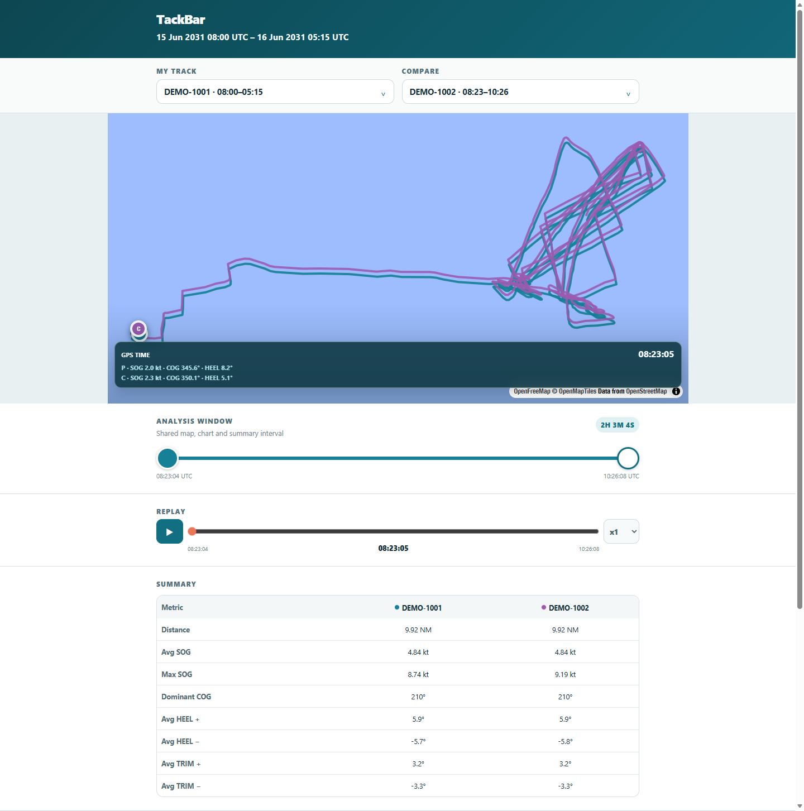

SAIL
Sal a navegar.
DATA
Trae tu track a TackBar.
DEBRIEF
Compara y comenta lo ocurrido.
LEARN
Aprende de la conversación.
TackBar — Sail. Debrief. Learn.
Aprendizaje compartido para navegantes de vela ligera, en el agua y después.
De navegar al debrief en menos de 2 minutos.
Todo desde el móvil.
- VAKAROS CONNECT
- SHARED SESSION
- OPEN LINK
- DEBRIEF
Envía tu actividad directamente desde Vakaros Connect. TackBar crea una sesión compartida y te envía el enlace. Ábrelo desde el móvil, la tablet o el ordenador — donde surja la conversación.
Hecho para la conversación después de navegar.
En el club, en el bar, en el pantalán o en la sala de debrief.
TackBar en acción
Compara dos actividades de navegación en una ventana de análisis compartida.

Únete al piloto de TackBar
Piloto experimental y voluntario. Datos admitidos: exportaciones de Vakaros .csv y .csv.gz.
Escríbenos para solicitar participar. El correo no constituye consentimiento; las condiciones de participación y privacidad se facilitan por separado antes de participar.
Código abierto, datos privados
TackBar es software de código abierto. La información personal, los recorridos GPS y los datos de navegación de los participantes no son datos abiertos ni se publican en el repositorio público.